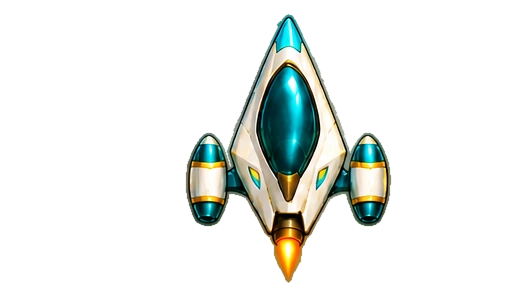
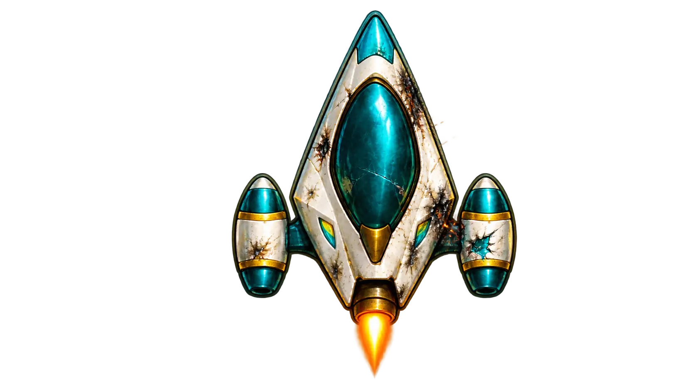
Этап 1Целый · Повреждённый
У каждой ступени есть целый и повреждённый корпус. В движении огонь постепенно разгорается; при остановке сопла гаснут, а сигнальные огни меняют режим. Переключатели позволяют сравнить состояния. Повреждённые изображения теперь сжаты в WebP.
Наблюдайте разгон, плавное затухание сопел, лёгкое парение и поворот. Кнопка повреждений ниже меняет состояние и здесь.


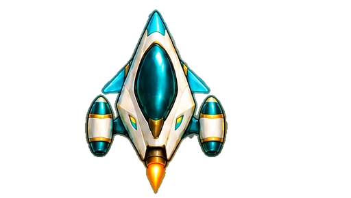
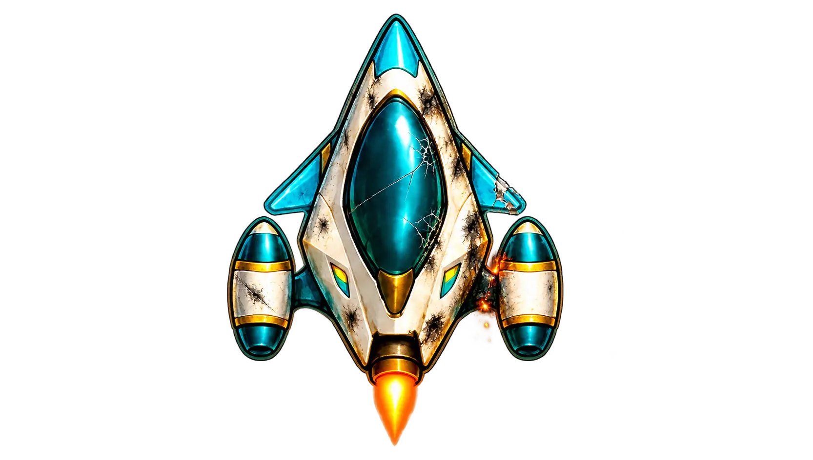
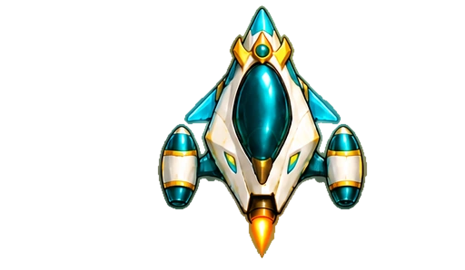
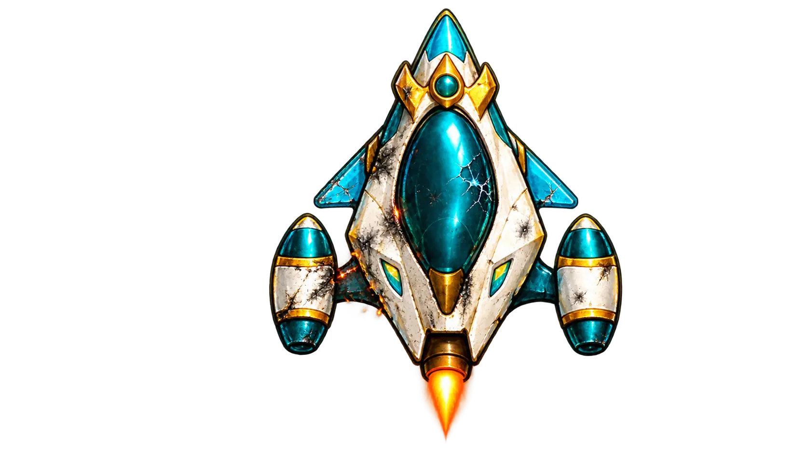
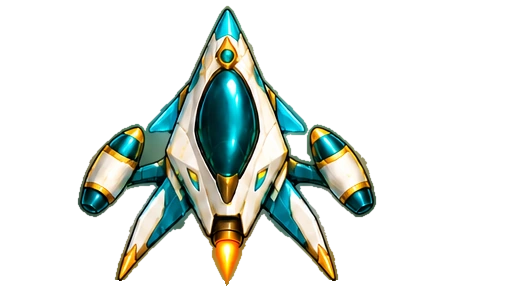
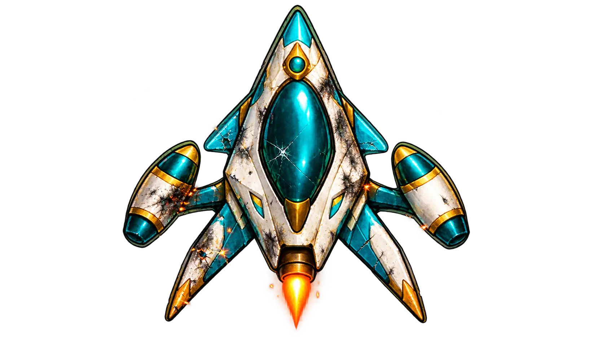
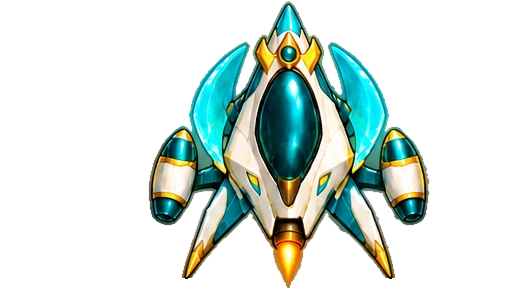
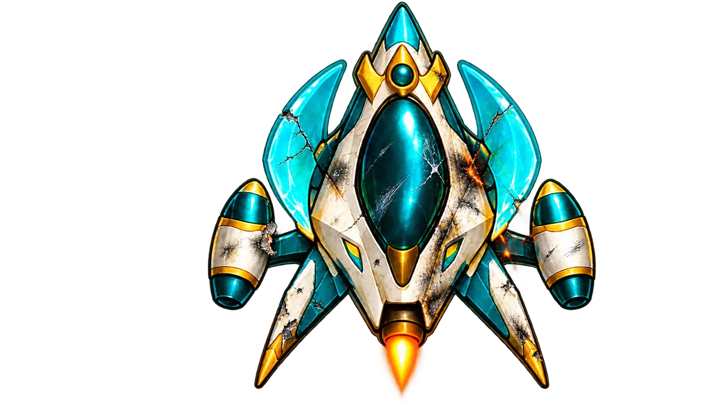
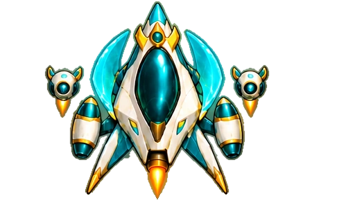
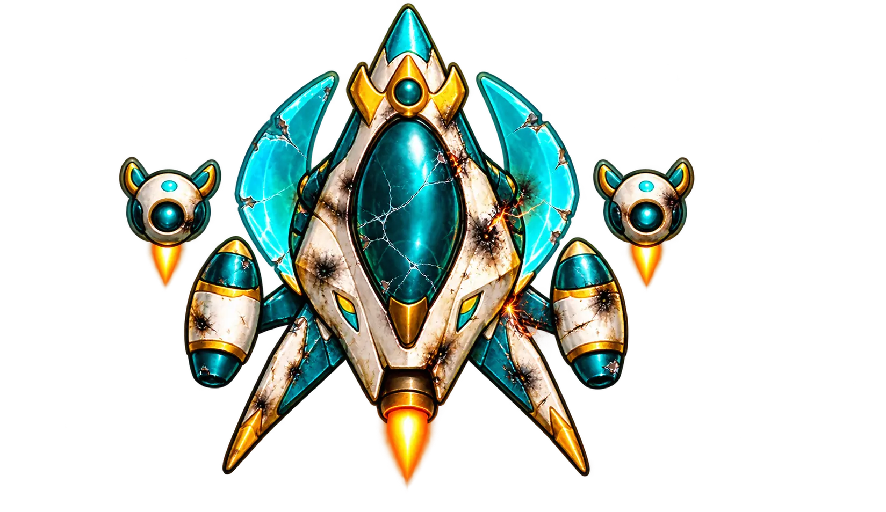
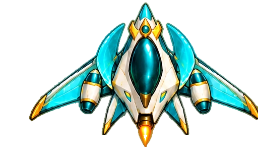
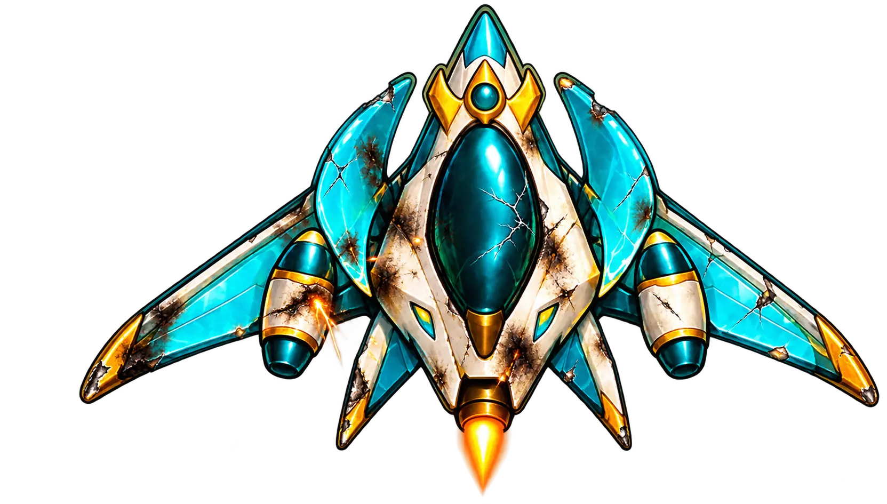
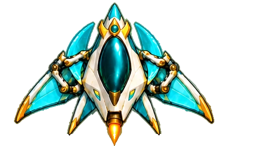
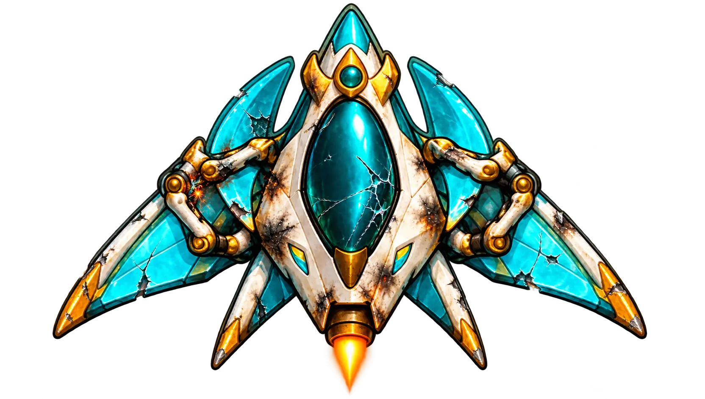
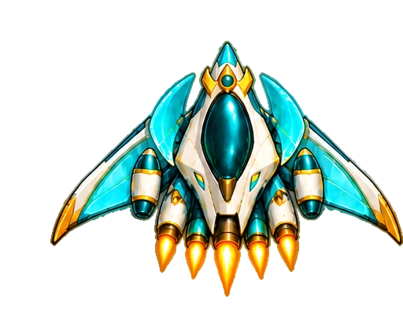
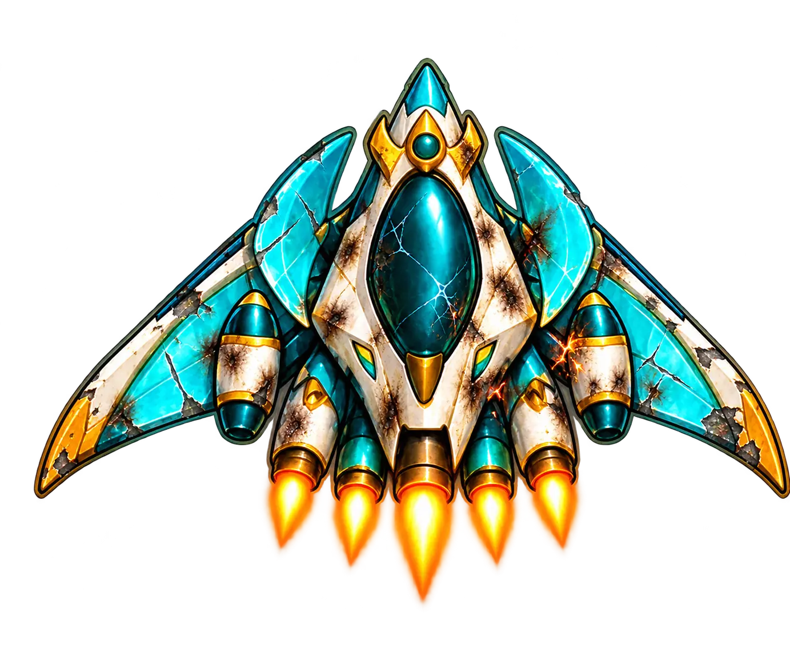
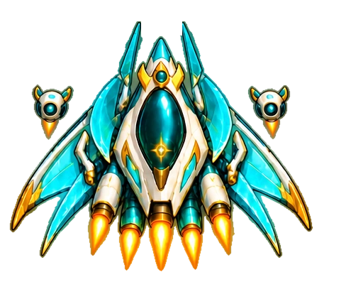
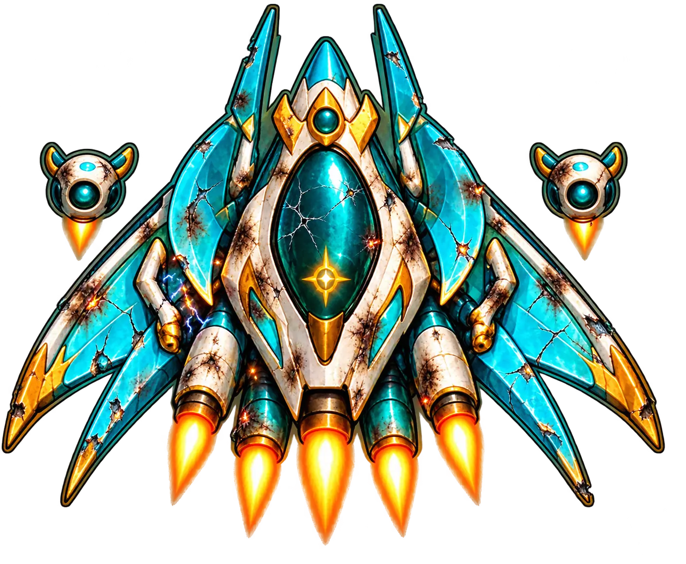